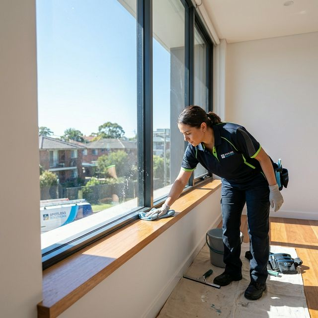
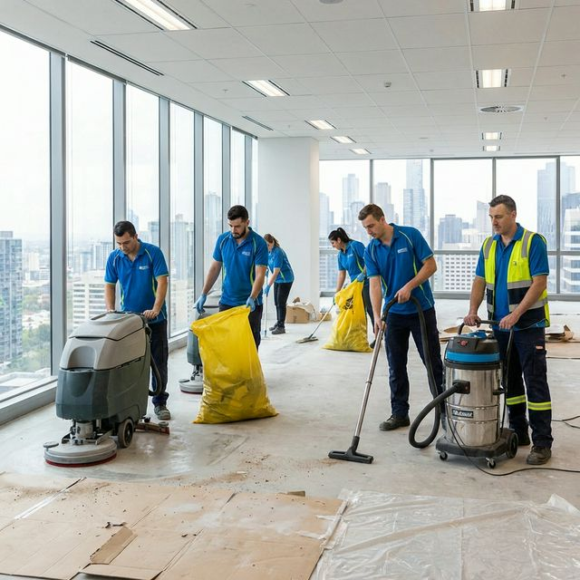

After Builders Cleaning Services in Melbourne
BABA Cleaning is proud to offer its valued customers all across Melbourne a wide range of professional after build cleaning, which will help get rid of all the mess that a building renovation and new building construction would create. With considerable experience in commercial, domestic, industrial, and corporate after construction cleaning in Melbourne, our first and foremost mission is to ensure that your space looks as clean, presentable, impressive and clean as it can be, following construction or renovation.
And remember, it's a tricky business that demands special tactics, safety measures, tools and technology. So do not try a DIY. You must hire quality professionals and here is where we make the difference. Indeed, our highly experienced and trained after builders cleaning specialists in Melbourne would come up with a service that will help you maintain a safe, clean and visually enticing property that can make you feel proud.


What Difference Will Our After-Renovation Cleaning Service Make?
Our highly experienced professional after renovation cleaning specialists in Melbourne would use the latest and the most effective cleaning techniques to deliver a comprehensive cleaning and get rid of all the eyesores and obstructions.
Our service has always been the epitome of the highest level of workmanship, and attention to detail, customer-centric approach and affordability. All these have been the hallmarks of our service, which have made us second to none as an after builders cleaning services provider in Melbourne.
What Our After Builders Cleaning Service in Melbourne Includes
BABA Cleaning offers a wide gamut of after renovation cleaning service in Melbourne that makes us your one-stop solution. Our service includes:
Windows & Sills
Cleaning the windows, window ledges and sills, the panes and adjoining areas.
Walls & Ceilings
Thorough cleaning of walls and ceilings, removing dust, paint marks and residue.
Floors & Carpets
Cleaning floors, including the carpets, the tiles & grouts to a spotless finish.
Toilets & Bathrooms
Cleaning toilets, sinks and various other bathroom surfaces to pristine condition.
Frames & Switches
Cleaning the door frames, switches, sockets and other fittings throughout the property.
One-Stop Solution
When you put stakes on us, what you get is a one-stop solution that justifies your investment.
Most Demanded After Builder Cleaning Service in Melbourne
Our after building services that we offer at BABA Cleaning is one of the most preferred services since we meticulously remove dirt, dust, debris, paint blemishes, etc. from the place. Moreover, as seasoned cleaners, we ensure 100% cleanliness since we have been carrying out cleaning of this type for years.
On top of that, our cleaners are highly experienced and adept at operating the tools that make builder cleaning convenient. So, if you are looking for the best cleaners to get the job done on time, now is the perfect time to get in touch with us. We guarantee that on completion of the service, you will love the cleanliness that we create.
After Renovation Cleaning Service in Melbourne
Apart from builders cleaning, at BABA Cleaning, we also offer after-renovation cleaning services in Melbourne. Here, our cleaners will get rid of all dirt, dust and debris that has been left in the place by the renovators.
Not only will our expert cleaners remove the dirt, dust and debris that have accumulated in the place, but they will also use pressure cleaners to get rid of the paint blemishes here and there. Finally, they will accumulate the waste in appropriate bags and carry them off, leaving your place spick and span.
Why Choose BABA Cleaning for After Builders Cleaning?
When it comes to professional after builders cleaning in Melbourne, here's why our customers choose us time and time again:
Hire Expert Builders Cleaners Melbourne Today
If you require professional after builders cleaning, BABA Cleaning is the company that will meet your needs. We have licensed professional cleaners to make the different areas of your property spotless after construction or renovation. Contact us today for a free quote!